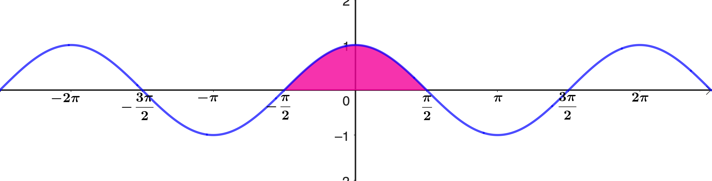
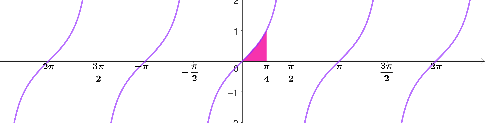
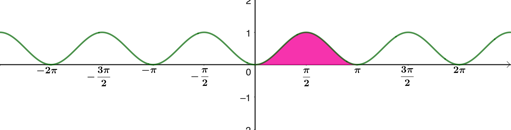
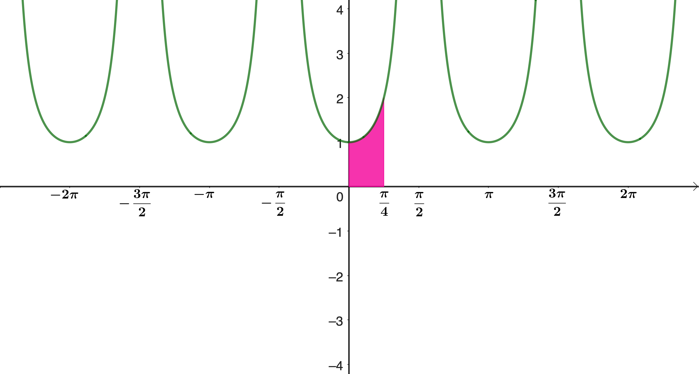
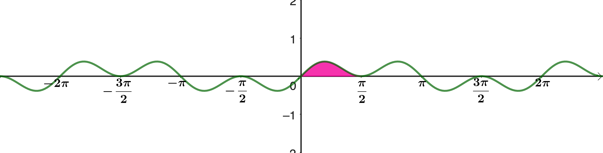
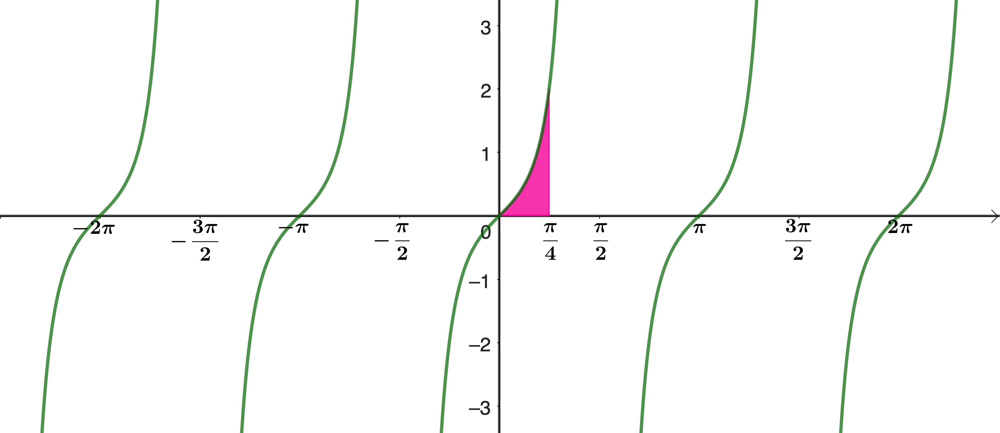

Welcome to integration with circular functions
This stage explores integration techniques involving circular functions. You'll discover how to find integrals of sine, cosine, tangent, and their powers, using substitution, identities, and pattern recognition.
Look for patterns and remember your circular function identities!
Integrals of circular functions
Find the shaded area under the graph \(y=\sin x\).
Find the shaded area under the graph \(y=\sin x\).
Please don't let your students use their calculators for any steps such as
- putting the integral into the calculator
- finding \(\cos 0\) or \(\cos \pi\)
Of course they may be able to do so in an exam, but if they do so now, they will learn nothing.
Since the differential of cos is \(−\sin\), and since integration is the opposite of differentiation, it must be the case that the integral of sin is \(−\cos\).
\[\begin{aligned} \text{area} &= \int_0^\pi \sin x \, \mathrm{d}x\\[12pt] &= \Big[- \cos x\Big]_0^\pi\\[12pt] &= - \cos \pi - (-\cos 0)\\[12pt] &= 1 + 1 = 2 \end{aligned}\]Find the shaded area under the graph \(y=\cos x\).

No calculators!
Find the shaded area under the graph \(y=\cos x\).
Before we try to integrate \(\tan x\), find \(\dfrac{\mathrm{d}}{\mathrm{d}x} \ln|\cos x|\)
Integrating \(\tan x\) needs integration by substitution, with which your students may not yet be familiar. However, they will surely know the chain rule, so if necessary, this page will provide a fix for this.
Find \(\dfrac{\mathrm{d}}{\mathrm{d}x} \ln|\cos x|\)
Find the shaded area under the graph \(y=\tan x\).

For the integral of tan, either use the result on the previous page, or use the substitution \(u = \cos x\). Or they might remember the rule for \(\int \frac{f'}{f}\), but even so, it's a good idea to do the substitution to remind themselves why this rule works.
Often, students will get the final version from the formula book without noticing that \(-\ln|\cos x|\) and \(\ln|\sec x|\) are the same thing, so it's a good moment to emphasise this.
Find the shaded area under the graph \(y=\tan x\).
You can use the result from the previous page to see that \[\int \tan x \, \mathrm{d}x=-\ln|\cos x|=\ln\left|(\cos x)^{-1}\right|=\ln|\sec x|\] or you could integrate \(\tan x\) with a substitution: \[\int \tan x \, \mathrm{d}x = \int \frac{\sin x}{\cos x} \, \mathrm{d}x \qquad u = \cos x \quad \frac{\mathrm{d}u}{\mathrm{d}x} = -\sin x\]
\[\begin{aligned} &= -\int \frac{\sin x}{\cos x} \frac{1}{\sin x} \, \mathrm{d}u\\[12pt] &= -\int \frac{1}{u} \, \mathrm{d}u\\[12pt] &= -\ln|u|\\[12pt] &= -\ln|\cos x|\\[12pt] &= \ln|\sec x| \end{aligned}\]For the area, we can use either form of the integral of tan, but please, no calculators, even for the manipulation of logs.
or
Find the shaded area under the graph \(y = \sin^2 x\).
Compare your answer with \(\displaystyle\int_0^\pi \sin x \, \mathrm{d}x\). Which is bigger? Explain your answer in terms of the graphs.

Here is the most straightforward method, but even once they have seen this idea and used it a few times, students often need reminding to use a double angle formula for \(\cos 2x\) to integrate \(\sin^2 x\) or \(\cos^2 x\).
Find the shaded area under the graph \(y = \sin^2 x\).
Compare your answer with \(\displaystyle\int_0^\pi \sin x \, \mathrm{d}x\). Which is bigger? Explain your answer in terms of the graphs.
Probably the easiest method is to rearrange one of the formulas for \(\cos 2x\):
\[\begin{aligned} \text{area} &= \int_0^\pi \sin^2 x \, \mathrm{d}x\\[12pt] &= \int_0^\pi \frac{1 - \cos 2x}{2} \, \mathrm{d}x\\[12pt] &= \Big[\frac{x}{2} - \frac{\sin 2x}{4}\Big]_0^\pi\\[12pt] &= \frac{\pi}{2} \end{aligned}\]\[\int_0^\pi \sin^2 x \, \mathrm{d}x=\frac{\pi}{2} < 2=\int_0^\pi \sin x \, \mathrm{d}x\] When \(0 < x < \pi,\quad 0 < \sin x < 1 \quad \Rightarrow \sin^2 x < \sin x\),
so the area on the \(\sin^2\) graph must be less than the area on the \(\sin\) graph.
You might be tempted to integrate by parts if you are familiar with this technique. If so, don't let me stop you! But the first method is surely easier. Here is the "by parts" method:
\[u = \sin x \quad \frac{\mathrm{d}v}{\mathrm{d}x} = \sin x\]
\[\frac{\mathrm{d}u}{\mathrm{d}x} = \cos x \quad v = -\cos x\]
\[\begin{aligned} \int \sin^2 x \, \mathrm{d}x &= -\sin x \cos x + \int \cos x \cos x \, \mathrm{d}x\\[12pt] &= -\frac{1}{2}\sin 2x + \int \cos^2 x \, \mathrm{d}x\\[12pt] &= -\frac{1}{2}\sin 2x + \int 1 - \sin^2 x \, \mathrm{d}x\\[12pt] &= -\frac{1}{2}\sin 2x + x - \int \sin^2 x \, \mathrm{d}x\\[12pt] \Rightarrow 2\int \sin^2 x \, \mathrm{d}x &= x - \frac{1}{2}\sin 2x+c\\[12pt] \Rightarrow \int \sin^2 x \, \mathrm{d}x &= \frac{x}{2} - \frac{1}{4}\sin 2x+c' \end{aligned}\]Find the shaded area under the graph \(y = \sec^2 x\)

Find the shaded area under the graph \(y = \sec^2 x\)
Remember that the differential of tan is \(\sec^2\), so
\[\begin{aligned} \text{area} &= \int_0^{\frac{\pi}{4}} \sec^2 x \, \mathrm{d}x\\[12pt] &= \Big[\tan x\Big]_0^{\frac{\pi}{4}}\\[12pt] &= \tan \frac{\pi}{4} - \tan 0\\[12pt] &= 1 \end{aligned}\]Now for some sightly more exotic integrals.
Find the shaded area under the graph \(y = \sin x \cos^2 x\).

Find the shaded area under the graph \(y = \sin x \cos^2 x\).
Some integrals look terrifying but actually turn out to be pretty simple. Here, perhaps you can see straight away that
\[\frac{\mathrm{d}}{\mathrm{d}x}\cos^3 x = -3\sin x \cos^2 x\]
so that the integral is \(-\frac{1}{3}\cos^3 x\).
This kind of "integrating by looking" is always something to be on the alert for.
If not, there is always substitution:
\[u = \cos x \Rightarrow \frac{\mathrm{d}u}{\mathrm{d}x} = -\sin x\]
\[\begin{aligned} \int_0^{\frac{\pi}{2}} \sin x \cos^2 x \, \mathrm{d}x &= \int_1^0 \sin x \cos^2 x \frac{\mathrm{d}x}{\mathrm{d}u} \, \mathrm{d}u\\[12pt] &= -\int_1^0 \frac{u^2 \sin x}{\sin x} \, \mathrm{d}u\\[12pt] &= \int_0^1 u^2 \, \mathrm{d}u = \Bigg[\frac{u^3}{3}\Bigg]_0^1\\[12pt] &= \frac{1}{3} \end{aligned}\]Did you notice the change of order of the limits in the last line to change the sign?
Find the shaded area under the graph \(y = \sin^3 x\), and compare this with the areas under \(y = \sin x\) and \(y = \sin^2 x\) from earlier.
Here, I've used two results from earlier in the sheet (but doubled one of them)
Find the shaded area under the graph \(y = \sin^3 x\).
Again, this one is easier than it looks, and it uses two previous results.
\[\begin{aligned} \int_0^\pi \sin^3 x \, \mathrm{d}x &= \int_0^\pi \sin x (1 - \cos^2 x) \, \mathrm{d}x\\[12pt] &= \int_0^\pi \sin x - \sin x \cos^2 x \, \mathrm{d}x\\[12pt] &= 2 - \frac{2}{3}\\[12pt] &= \frac{4}{3} \end{aligned}\]When \(0 < x < \pi\),
\[0 < \sin x < 1 \quad \Rightarrow \sin^3 x < \sin^2 x < \sin x\] which explains why
\[\int_0^\pi \sin^3 x \, \mathrm{d}x < \int_0^\pi \sin^2 x \, \mathrm{d}x < \int_0^\pi \sin x \, \mathrm{d}x\]
Here's another crazy looking example that, surprisingly, you can do just by looking at it!
Find the shaded area under the graph \(y = \frac{\sin x}{\cos^3 x}\).

\[\frac{\mathrm{d}}{\mathrm{d}x}\cos^{-2} x = 2\cos^{-3} x \sin x\]
\[\frac{\mathrm{d}}{\mathrm{d}x}\cos^{-2} x = 2\cos^{-3} x \sin x\]
so that
\[\begin{aligned} \int_0^{\frac{\pi}{4}} \frac{\sin x}{\cos^3 x} \, \mathrm{d}x &= \Bigg[\frac{1}{2\cos^2 x}\Bigg]_0^{\frac{\pi}{4}}\\[12pt] &= 1 - \frac{1}{2}= \frac{1}{2} \end{aligned}\]There is another great option:
\[\begin{aligned} \frac{\mathrm{d}}{\mathrm{d}x}\tan^2 x&=2\tan x\sec^2 x\text{ so that}\\[12pt] \int_0^{\frac{\pi}{4}} \frac{\sin x}{\cos^3 x} \, \mathrm{d}x &=\int_0^{\frac{\pi}{4}} \tan x\sec^2 x \, \mathrm{d}x \\[12pt] &=\Bigg[\frac{1}{2}\sec^2 x\Bigg]_0^{\frac{\pi}{4}}\\[12pt] &= 1 - \frac{1}{2}= \frac{1}{2} \end{aligned}\]Notice, though, that \(\sec^2 x = 1 + \tan^2 x\), so
\[\int \frac{\sin x}{\cos^3 x} \, \mathrm{d}x = \frac{\tan^2 x}{2} + c'\]
If you like your substitutions, there are at least three substitutions that will work:
\[u = \cos x \qquad u = \sec x \qquad u = \tan x\]
Give them a go if you feel like it.
Here's one:
If you like your substitutions, there are at least three substitutions that will work:
\[u = \cos x \qquad u = \sec x \qquad u = \tan x\]
Give them a go if you feel like it.
\[u = \sec x \quad \frac{\mathrm{d}u}{\mathrm{d}x} = \sec x \tan x\]
\[\begin{aligned} \int \tan x\sec^2 x \,\mathrm{d}x &= \int \tan x\sec^2 x \frac{\mathrm{d}x}{\mathrm{d}u} \, \mathrm{d}u\\[12pt] &= \int \tan x\sec^2 x \frac{1}{\sec x \tan x} \, \mathrm{d}u\\[12pt] &= \int \sec x \, \mathrm{d}u\\[12pt] &= \int u \, \mathrm{d}u\\[12pt] &= \frac{u^2}{2} + c\\[12pt] &= \frac{\sec^2 x}{2} + c \end{aligned}\]\[u = \tan x \quad \frac{\mathrm{d}u}{\mathrm{d}x} = \sec^2 x\]
\[\begin{aligned} \int \tan x\sec^2 x \,\mathrm{d}x &= \int \tan x\sec^2 x \frac{\mathrm{d}x}{\mathrm{d}u} \, \mathrm{d}u\\[12pt] &= \int \tan x\sec^2 x \frac{1}{\sec^2 x } \, \mathrm{d}u\\[12pt] &= \int \tan x \, \mathrm{d}u\\[12pt] &= \int u \, \mathrm{d}u\\[12pt] &= \frac{u^2}{2} + c'\\[12pt] &= \frac{\tan^2 x}{2} + c' \end{aligned}\]Why is the last one the same as the other two?
Why is \(\displaystyle{\frac{\tan^2 x}{2} + c'}\) the same as \(\displaystyle{\frac{\sec^2 x}{2} + c}\) ?
Because \(1+\tan^2x=\sec^2 x\), so the two versions differ only by a constant
Here's a classic tricky integral.
Find \(\displaystyle\int \sec x \, \mathrm{d}x\) using the substitution \(u = \sin x\).
Find \(\displaystyle\int \sec x \, \mathrm{d}x\) using the substitution \(u = \sin x\).
Here is another substitution that will work, but it yields a rather different looking solution.
Find \(\displaystyle\int \sec x \, \mathrm{d}x\) using the substitution \(u = \sec x + \tan x\).
This is only for very strong students!
There are a number of substitutions that will work.
First, the standard substitution method; this suffers from the fact that it more or less relies on your knowing the answer in advance.
Find \(\displaystyle\int \sec x \, dx\) using the substitution \(u = \sec x + \tan x\).
You now have two versions of the integral that look very different.
Show that \( \displaystyle{\ln\left|\frac{1 + \sin x}{\cos x}\right| + c}\) and \(\displaystyle{\frac{1}{2}\ln\left|\frac{1 + \sin x}{1 - \sin x}\right| + c}\) are equivalent versions of \(\displaystyle{\int \sec x \, \mathrm{d}x }\)
Show that \( \displaystyle{\ln\left|\frac{1 + \sin x}{\cos x}\right| + c}\) and \(\displaystyle{\frac{1}{2}\ln\left|\frac{1 + \sin x}{1 - \sin x}\right| + c}\) are equivalent versions of \(\displaystyle{\int \sec x \, \mathrm{d}x }\)
Yes, they are!
Congratulations on completing your circular functions journey!
You've now mastered integration with circular functions, completing the entire series from definitions through differentiation and equations to integration. You've developed powerful techniques including substitution, using identities, and recognizing patterns in complex integrals.
Integration is a powerful tool—keep looking for patterns and connections between different methods!